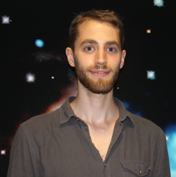

I am currently a post-doc researcher at Maison de la Simulation, CEA-Saclay.
After Graduating from The University of York in the summer of 2014 with a first class MPys degree in Theoretical Physics, I began my studies towards a doctorate in Astrophysics in September of 2014, which I obtained in the Autumn of 2018.
